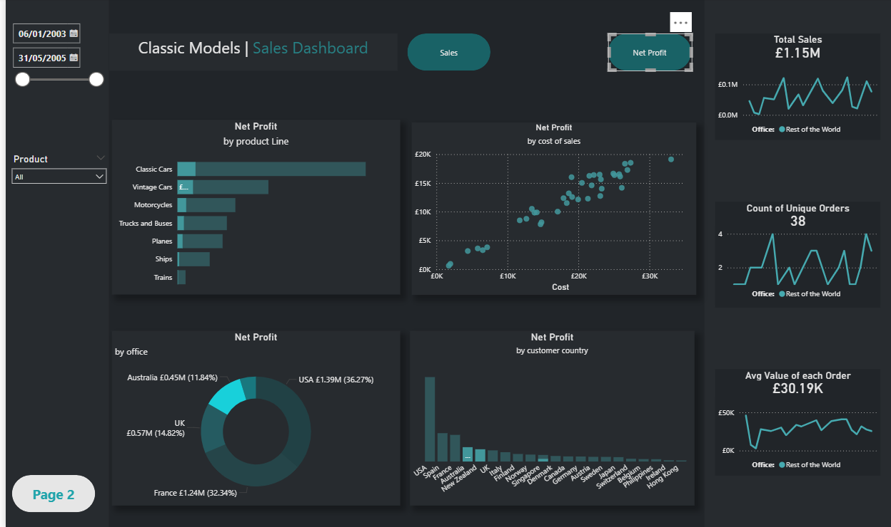

Project Summary
This Power BI project demonstrates end-to-end BI delivery: modelling sales data into a reliable reporting structure, building reusable measures, and designing an interactive dashboard that supports both executive monitoring and drill-down analysis.
Problem
Build a stakeholder-friendly dashboard that answers key trading questions quickly: overall sales performance, how profitability is distributed across product lines, and which offices and customer countries contribute the most to net profit.
Data
- Dataset: Classic Models (orders, customers, order details, products, employees, offices)
- Preparation: relationship mapping, data type validation, and time intelligence support (date filtering)
- Date range used in dashboard: 06/01/2003 to 31/05/2005
Headline KPIs (from the dashboard)
Total Sales
£9.60M
Unique Orders
326
Average Order Value
£29.46K
Net Profit (overall)
£3,825,880.25
KPI values are taken directly from the Power BI dashboard pages (sales tiles on page 1 and profit total on page 2).
Key Insights
- Product line profitability is led by Classic Cars (£1.53M net profit), followed by Vintage Cars (£0.74M) and Motorcycles (£0.47M). Lower contributors include Ships (£0.26M) and Trains.
- Net profit is concentrated across offices, with USA contributing £1.39M (36.27%) and France £1.24M (32.34%). The UK contributes £0.57M (14.82%) and Australia £0.45M (11.84%).
- The profit-by-cost scatter plot shows a strong positive relationship between cost and net profit, supporting margin and cost-to-serve conversations at product/order level.
- The sales overview table provides month-level performance with MoM% and YTD context; total sales shown in the table are £9,604,190.61, helping stakeholders review performance changes across time.
Approach
- Structured modelling approach to support consistent KPIs across filters and drill-down paths
- Measures for sales and profit reporting, plus period comparisons (MoM% and YTD views)
- Dashboard UX designed for fast performance review: KPI tiles, product line ranking, office contribution and country breakdown
Results
- Delivered a KPI-first dashboard for executive monitoring and drill-down investigation
- Enabled product line and office-level profitability analysis for prioritisation
- Provided country-level visibility to support market performance conversations
What This Demonstrates (Senior Analyst Signals)
- Strong KPI reporting and stakeholder-ready dashboard design
- Comfort working with profitability metrics (net profit, margin context) and commercial segmentation
- Ability to move from reporting to insight by highlighting concentration and drivers
- Clear communication of performance patterns across product, office and geography